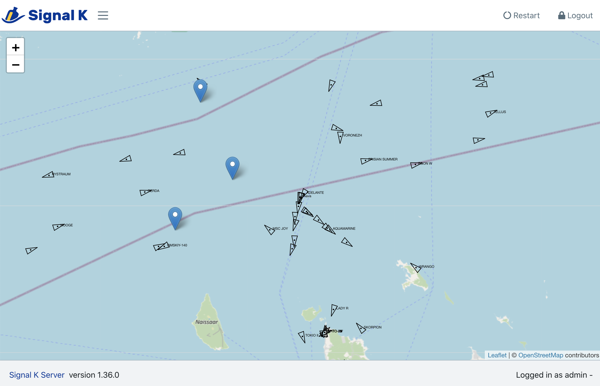
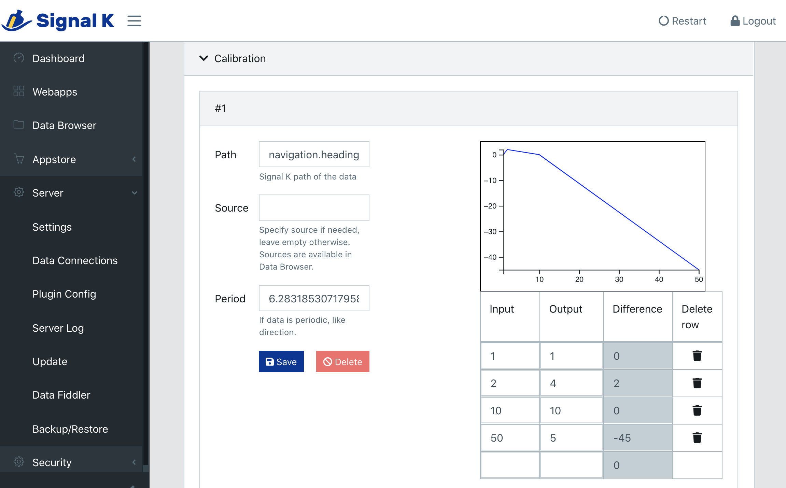
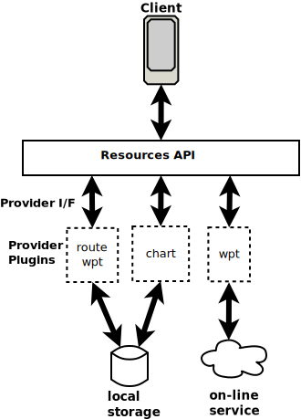

Introduction
Signal K Server is software designed to be deployed on a vessel to act as a central hub which:
- Collects data from devices and sensors on board
- Aggregates and exposes it using the Signal K Data Standard
- Exposes the collected data via REST APIs and websocket protocols over a standard WiFi, LAN or Internet connection.
Through implementation of the Signal K Data Standard, it enables data exchange between NMEA0183, NMEA2000 and other marine protocols facilitating two way communication between the various onboard systems. In addition it can also act as data hub for additional sensors ensuring their data appears within the single data model. (Visit the Signal K SensESP project for ESP32 for details.).
Data is made available to client applications / connections in JSON format making it widely accessible to Apps on phone / tablet devices and web applications.
Signal K Server is also extensible, providing a plugin framework which allows developers to create solutions that integrate and extend its capabilities. These solutions can be published to npmjs and installed via the App Store in the server's web-based user interface.

What's new in Version 2.
Signal K Server version 2 introduces new REST APIs designed to perform specific operations (e.g. set destination, advance to next point, etc).
These APIs have been implemented to ensure the integrity of the underlying Signal K data model by maintaining values in all related paths associated with the operation. In this way a cohesive, reliable data set is presented to all connected applications and devices.
The new APIs are mounted under /signalk/v2/api, their definition(s) available as OpenApi documents accessible via Documentation -> OpenAPI in the server admin user interface. They coexist with /signalk/v1/api paths to ensure continued operation of applications.
Some REST APIs provide an interface for use by plugins to enact operations in a managed way.
Important: The Signal K data paths maintained by the REST APIs should NOT be updated directly by any other plugin or process!
With the move towards operation based APIs some paths are flagged for deprecation. Please see Changes & Deprecations for details.
Course API
Provides common course operations via /signalk/v2/api/vessels/self/navigation/course.
See the Course API for details.
Resources API
Provides operations for creating, maintaining and accessing resources such as routes, waypoints, etc via /signalk/v2/api/resources.
See the Resources API for details.
Notes for Developers:
NMEA0183 / NMEA2000 message processing
The Course API and associated operations maintain all "course" related paths in the data model but this API is not the only source of course data. NMEA data streams are also a source of course data.
In the past, plugins processing this data have directly populated various v1 Signal K paths. Moving forward
these plugins should utilise interface provided by the Course API to perform the required operation.
In practise this would mean collecting and processing data received from the relevant sentences / PGNs to compose a Course API request.
Connection with v1 Full Data Model
In the current implementation of Signal K Server there is still only a single stream endpoint and all values emitted as deltas (both v1 & v2) will continue appear there.
It should be noted, that while both v1 & v2 deltas appear in the one stream, only v1 deltas will populate the full data model and be available under the /signalk/v1/api/ path!
Stream updates
The new REST APIs emit v2 deltas with values that are objects.
For example, when a course is activated, deltas will be emitted for navigation.course.previousPoint, navigation.course.nextPoint and navigation.course.activeRoute where the value is an object.
Example: v2 Delta
{
"path": "navigation.course.previousPoint",
"value": {
"position": {
"latitude": 65.0,
"longitude": 3.754
},
"type": "Location",
"href": null
}
}
Changes & Deprecations
Changes
The following changes have been implemented with the introduction of Resources API and apply to applications using the ./signalk/v2/resources endpoint.
Note: These changes DO NOT impact applications using the ./signalk/v1/resources endpoint.
1. Resource ID prefix assignment
The version 1 specification defined resource Ids with the following format urn:mrn:signalk:uuid:<UUIDv4>.
e.g. urn:mrn:signalk:uuid:18592f80-3425-43c2-937b-0be64b6be68c
The Resource API has dropped the use the prefix and ids are now just a uuidv4 value.
e.g. 18592f80-3425-43c2-937b-0be64b6be68c
This format is used for both accessing a resource e.g. /signalk/v1/api/resources/waypoints/18592f80-3425-43c2-937b-0be64b6be68c as well as the value within an href attribute.
Example:
{
"name": "...",
"descripton": "...",
"href": "/resources/waypoints/18592f80-3425-43c2-937b-0be64b6be68c",
...
}
2. Resource Attributes
The Resources API has updated the definition of the following resources:
routes: removed thestart,endproperties.waypoints: removedpositionattribute, addedname,descriptionandtypeattributes.regions: removedgeohashattribute, addednameanddescriptionproperties.notes: removedgeohashandregionattributes, addedhrefandpropertiesattributes.charts: There has been a significant changes to include support for WMS, WMTS and TileJSON sources.
Please see the Resources OpenAPI definition for details.
Deprecations:
1. courseGreatCircle, courseRhumbline paths
With the introduction of the Course API the following paths should now be considered deprecated:
/signalk/v1/api/vessels/self/navigation/courseGreatCircle/signalk/v1/api/vessels/self/navigation/courseRhumbline
_Note: The Course API does currently maintain values in these paths for the purposes of backward compatibility, but applications and plugins referencing these paths should plan to move to using the equivalent paths under /signalk/v2/api/vessels/self/navigation/course.
Getting Started
Signal K Server is a NodeJS application which can be installed on a variety of devices and operating systems.
It is available for installation via:
- NPM package
- Docker image
- GitHub repository
See the relevant section below for instructions based on your target system.
Prerequisites:
Signal K server requires NodeJs version >= 18 be installed on the target system prior to commencing installation.
Raspberry Pi Installation
Install Signal K Server on Raspberry Pi outlines the process for getting Signal K Server up and running (including supporting services) on Raspberry Pi OS.
Using Docker
Signal K Server is available as a Docker image on Docker Hub and cr.signalk.io/signalk/signalk-server.
To simply run a Signal K Server with some sample data on a device with docker installed, enter the following into a terminal:
docker run --rm signalk/signalk-server --publish 3000:3000
This will start an instance of Signal K Server on port 3000 which you can then access via the web based Admin UI by pointing your web browser at http://localhost:3000.
If you are wanting to use docker to deploy Signal K Server on your vessel you will need to:
- Specify a location to persist the server's configuration so it is not lost between restarts
- Run the instance as a background process
Example: Run as background process and store server configuration in the current folder:
docker run -d --init --name signalk-server -p 3000:3000 -v $(pwd):/home/node/.signalk signalk/signalk-server
You are ready to now configure your installation and connect data from devices on your boat.
Installation via NPM
Signal K Server can be installed directly using NPM.
Windows:
- See Installing on Windows below.
Linux / macOS:
sudo npm install -g signalk-server
Once installation is complete, enter the following in a terminal window, to generate a settings file and configure the server to start automatically:
sudo signalk-server-setup
If you choose not to use signalk-server-setup you can start the server by entering the following in a terminal window:
signalk-server
Installing on Windows
Please use the Signal K installer for Windows to install Signal K Server on a Windows device.
Install using Git
Installation from the GitHub repository is useful when developing plugins and components.
To do this enter the following commands in a terminal window:
# Copy the files to your device
git clone https://github.com/SignalK/signalk-server.git
# change to the folder containing the downloaded files
cd signalk-server
# install the dependencies
npm install
# build all packages in the repository
npm run build:all
To start Signal K Server with a sample configuration file and some sample data, enter the following into a terminal: To use NMEA0183 sample data:
bin/nmea-from-file
To use NMEA2000 sample data:
bin/n2k-from-file
The server will start playing back data from the specified sample file that can be viewed using the Data Browser in the Admin UI (http://localhost:3000) or via REST API / websocket connection.
Installation on Raspberry Pi
Installation of Signal K server can consists of the following steps:
- Install the tools and libraries required to run the Signal K server (the dependencies)
- Install a Signal K Server to process the Signal K data
- Run the Setup script.
Important: If you are updating a Signal K server installation, especially if upgrading an installed version <= 1.40.0, please check here first.
Prerequisites:
Raspberry Pi OS is installed on the device.
For instructions on how to install the operating system can be found here..
Note: It is also possible to perform a "headless install" using Raspberry Pi OS Lite since the GUI for Signal K is browser based.
Once the OS installation has been completed, you are ready to commence.
Install the Dependencies
-
Log in to the RPi Desktop and open a terminal.
-
Update the list of install packages.
$ sudo apt update -
Install NodeJS and npm.
$ curl -sL https://deb.nodesource.com/setup_18.x | sudo -E bash - $ sudo apt-get install -y nodejs -
Ensure that we're using the latest version of npm.
$ sudo npm install -g npm@latestUse the following command to check the versions of NodeJS and npm installed.
node -v && npm -vEnsure the reported versions are equal to or greater than
v18.15.0, 9.5.0respectively. -
Install a Bonjour (mDNS) service for Linux called Avahi, which allows Apps and other network devices to Discover the Signal K server.
$ sudo apt install libnss-mdns avahi-utils libavahi-compat-libdnssd-dev
Install Signal K Server
$ sudo npm install -g signalk-server
You can test that installation was successful by starting the server using some sample data.
$ signalk-server --sample-nmea0183-data
You should see the terminal output "signalk-server running at 0.0.0.0:3000" as shown below...
$ signalk-server --sample-nmea0183-data
Using sample data from /usr/lib/node_modules/signalk-server/samples/plaka.log
signalk-server running at 0.0.0.0:3000
The Signal K Node Server is now reading and publishing sample NMEA0183 data from the specified file.
Using a Web browser enter the following URL: http://127.0.0.1:3000/signalk which should display the following information indicating the server is up and running.
{
"endpoints":{
"v1":{
"version":"2.0.0",
"signalk-http":"http://127.0.0.1:3000/signalk/v1/api/",
"signalk-ws":"ws://127.0.0.1:3000/signalk/v1/stream",
"signalk-tcp":"tcp://127.0.0.1:3858"
}
},
"server":{
"id":"signalk-server-node",
"version":"2.0.0"
}
}
Run the Setup Script
Now that you have Signal K server installed, you will want to generate a settings file for your vessel and configure your RPi to start the server automatically. To do this run the setup script by entering the following command and follow the prompts.
$ sudo signalk-server-setup
You can re-run this command at any time in the future to change the settings.
Note: The setup script will enable security which will require you to Login`` from the Admin UI. Clicking Login` for the first time will prompt you to create a user and password.
Signal K server will now be started automatically when your RPi boots up.
If you want to temporarily stop the Signal K server, you can do so by entering the following commands:
$ sudo systemctl stop signalk.service
$ sudo systemctl stop signalk.socket
To start Signal K server again enter the following commands:
$ sudo systemctl start signalk.service
$ sudo systemctl start signalk.socket
To stop Signal K server from starting automatically enter the following commands:
$ sudo systemctl disable signalk.service
$ sudo systemctl disable signalk.socket
You are ready to now configure your installation and connect data from devices on your boat.
Updating your Installation
Signal K Server is frequently updated to introduce new features and fix issues that have been reported. Sometime these updates require that NodeJS or other supporting software on your device to be upgraded to support the new functionality.
Additionally your device's operating system are constantly evolving to address security issues as well as providing new capabilities.
Regularly updating your installation will reduce both the volume of data download and the time taken to complete the process. Connecting your device to a network with good broadband speed before performing an update is recommended.
Updates fall into four categories:
- Device Operating system (e.g. RaspberryPi OS)
- NodeJS / NPM
- Signal K Server
- Signal K WebApps and Plugins
Update Device Operating System
Instructions will vary depending on your device but for linux based systems such as the Raspberry Pi the following instrctions are used to update the OS.
From a terminal window enter the following commands:
sudo apt update
sudo apt dist-upgrade
If you have not performed an update for a while these commands may take a while to complete, just be patient and make sure everything completes correctly.
After the process has completed restart your device.
Update NodeJS and NPM
To ensure the version of NodeJS on your device is supported by Signal K Server (see prerequisites), check the installed version by entering the following in a terminal window:
node -v
# example response
v18.17.0
If the version of NodeJS displayed is lower than the version supported by Signal K Server then you can update it with the following command:
sudo apt upgrade nodejs
It is also recommended to update the version of the Node Package Manager (NPM).
sudo npm install -g npm@latest
Update Signal K Server
When an update is available for Signal K Server a visual indication is displayed in the Admin UI.
Important! Before updating please ensure the version of NodeJS on your device is supported by Signal K Server.
If you are updating from Signal K Server version v1.40.0 or earlier please read this first before proceeding.
Click on Server -> Update to display information about the new version.

Click Update to start the installation.
After the installation is complete, click Restart to launch the updated Signal K Server.
WebApps and Plugins
After updating Signal K Server some plugins and WebApps may also need to be updated.
The AppStore is where WebApps and Plugins can be installed, removed or updated. Those with an update available will be listed in Appstore -> Updates in the Admin UI.
Clicking on the download cloud button next to the WebApp / Plugin you wish to update.
After all installations have been completed, click Restart to activate the updated WebApps and Plugins.
Runtime Environment & Options
Signal K Server provides the following command line options and environment variables to configure your implementation.
Command line options
| Option | Description |
|---|---|
-s | Override path to the settings file. (same as SIGNALK_NODE_SETTINGS environment variable) |
-c | Override the path to find server configuration. (same as SIGNALK_NODE_CONFIG_DIR environment variable) |
--sample-nmea0183-data | Starts signalk-server with sample NMEA0183 data. |
--sample-n2k-data | Starts signalk-server with sample NMEA2000 data. |
--override-timestamps | Override timestamps in the sample NMEA2000 data with current date and time. Doesn't apply nor makes a difference to NMEA0183 sample data. |
--securityenabled | Enable security. For a fresh install this makes the Admin UI force the user to create an admin account before he/she can continue further into the UI. See Security for further details. |
Environment variables
| Variable | Description |
|---|---|
PORT | Override the port for http/ws service (default is 3000). |
SSLPORT | Override the port for https/wss service. If defined forces ssl as default protocol (default port is 3443). |
PROTOCOL | Override http/https where the server is accessed via https but the server sees http (e.g. when Heroku handles https termination) |
EXTERNALPORT | The port used in /signalk response and Bonjour advertisement. Has precedence over configuration file. |
EXTERNALHOST | The host used in /signalk response and Bonjour advertisement. Has precedence over configuration file. |
FILEUPLOADSIZELIMIT | Override the file upload size limit (default is '10mb'). |
NMEA0183PORT | Override the port for the NMEA 0183 over tcp service (default is 10110). |
TCPSTREAMPORT | Override the port for the Signal K Streaming (deltas) over TCP. |
TCPSTREAMADDRESS | Override the address the Signal K Stream (deltas) over TCP is listening on. |
DISABLEPLUGINS | Disable all plugins so that they can not be enabled (default is false). |
DEFAULTENABLEDPLUGINS | A comma separated list of plugin ids that are overridden to be enabled by default if no setttings exist. Lower preference than DISABLEPLUGINS. |
PLUGINS_WITH_UPDATE_DISABLED | A comma separated list of plugin that will not be updated. |
SECURITYSTRATEGY | Override the security strategy module name. |
WSCOMPRESSION | Compress websocket messages (default is false). |
MAXSENDBUFFERSIZE | The maximum number of bytes allowed in the server's send buffer of a WebSocket connection. The connection will be terminated if this is exceeded. Guards against slow or dysfunctional clients that can not cope with the message volume (default is 512 * 1024 bytes). |
SIGNALK_SERVER_IS_UPDATABLE | Allows the server to be updated through the GUI even if it is not installed in the standard paths (default is false). If set to true, the server must have been installed with npm install -g signalk-server. |
SIGNALK_DISABLE_SERVER_UPDATES | Disables server updates in the GUI (default is false). |
DEBUG | A comma-separated list of tags for debugging the specified module (e.g signalk-server*,signalk-provider-tcp). Can now be defined directly in the graphical interface. More help on how to use the debug here: https://www.npmjs.com/package/debug#wildcards |
IS_IN_DOCKER | Used to tell the server it is in Docker and not normally updateable (default is false). |
NPMREGISTRYTIMEOUT | How long to wait for the registry when retrieving the App Store listing (default is 20s). |
SECRETKEY | A secret string used to generate an authentication token (the internal default autogenerated is a string of 512 hex chars like 'ef8307a4c7a4bd7...309d947bca3') |
ALLOW_DEVICE_ACCESS_REQUESTS | Used when a device needs to gain access to a secured Signal K server (default is true) (https://signalk.org/specification/1.4.0/doc/access_requests.html). |
ALLOW_NEW_USER_REGISTRATION | (default is true). |
ADMINUSER | Force an account for admin user (username:password format). |
PRESERIALCOMMAND | Command to run before opening a serial port. |
SIGNALK_NODE_SETTINGS | Override the path to the settings file. |
SIGNALK_NODE_CONFIG_DIR | Override the path to find server configuration. Includes all run-time changing content: configuration files, plugins, plugin configuration files, webapps, and so forth. |
Security
Introduction
The umbrella term Security in Signal K server refers to the difference between running a server, that any one connected to the network can access and alter at will (unsecured) , and one with restrictions in place (secured).
The available security options relate to:
- authentication: Users and / or connecting devices having to provide a credential to gain access to the server (e.g. username & password, access token, etc.).
- access control: Based on the authentication, access is granted to only specific Signal K data and server configuration.
- communications: Network traffic is encrypted and the identity of the server verified to protect against eavesdropping.
- network services: Control which of the server's services/interfaces are configured and active (e.g. does it allow unsecured read/write over the network).
Enabling Security
When Signal K Server does not have security enabled, the Login option at the top right corner of the Admin UI will not be available.
Security can be enabled in several ways:
- Through the Security menu option in the Admin UI
- Starting the server with the
--securityenabledcommand line option - Adding the following section in the settings file
"security": {
"strategy": "./tokensecurity",
}
When security is enabled, the next time you access the Admin UI it will prompt you to create an administrator account.
Security configuration is stored in file called security.json which will be located in the server configuration directory.
Disabling Security / Lost Admin Credentials
In case the administrator user credentials are lost, removing the security.json file and restarting the server will restore access to the Admin UI.
Access Control
Access control lists (acls) allow for fine grained access to specific data in Signal K. They specify the permissions assigned to users for resources within specifc contexts and are defined within the security.json file.
The following example defines acls for the self context allowing:
-
Anyone to read the paths
"steering.*","navigation.*","name","design.aisShipType"and grants the admin user permission to write (update) those paths. -
The user john to read any data coming from the
actisense.35$source. -
For all other paths, only the admin user to read and no one can write.
"acls": [
{
"context": "vessels.self",
"resources": [
{
"paths": ["steering.*", "navigation.*", "name", "design.aisShipType"],
"permissions": [
{
"subject": "any",
"permission": "read"
},
{
"subject": "admin",
"permission": "write"
}
]
},
{
"sources": [ "actisense.35" ],
"permissions": [
{
"subject": "john",
"permission": "read"
}
]
},
{
"paths": ["*"],
"permissions": [
{
"subject": "admin",
"permission": "read"
}
]
}
]
}
]
Note: If there is no match is found for a specific path in the acl list, then permission will be denied to that path!
Active network services
Signal K Server's main network services are:
- The primary Signal K http / WebSocket interface, with options to use TLS encryption and authentication (read/write)
- NMEA0183 data over TCP on port 10110 (read only)
- Signal K over TCP on port 8375 (read/write)
In addition the user may configure any number of TCP, UDP and Websocket connections, some of which allow write access to the server.
The security implication of these connections is that with no security options turned on devices connected to the network will have both read and write access to practically all of its data and settings.
People often dismiss local network access by saying that their boat's local network is secure enough. But one very common scenario is connecting your Signal K server (e.g. a Raspberry Pi) to a marina wifi. Many wifi networks allow communication between all connected computers, so your Signal K server will be advertising its services over MDNS to all other connected devices.
So in the case that your server has a manually configured connection for NMEA0183 over UDP, NMEA0183 data broadcast by other devices will be received and written into your SIgnal K data.
NMEA0183 connections over TCP and UDP are inherently unsafe. There are no options for authentication and / or secure communication. In comparison Signal K over TLS and HTTP / WebSockets can provide secure, authenticated read and write access to your data.
Configuring Signal K Server
Signal K Server provides an Admin UI to allow you to easily configure your installation.
Open the Admin UI using a web browser on the device where Signal K server is installed (if the defaults have not been changed) by navigating to http://localhost:3000.
Create an Admin account
It is considered good practise to enable security and create an administrator account to controll access to your server and protect your data.
If you ran the signalk-server-setup script, security will be enabled and you will be presented with a login screen when accessing the Admin UI.
If the login screen is not displayed, click Login (top right of screen) to display the prompt to create a user and password.
Alternatively, from the menu select Security -> Users and then:
- Click Add
- Enter a user id
- Enter a password and confirm it
- In Permissions select Admin
- Click Apply.
After creating the account, the server needs to be restarted.
How you restart the server will depend on the installation type (i.e. installed from NPM, embedded on a commercial device, etc). Power cycling the device that Signal K Server is always an option.
Set up data connections
To get data into Signal K server you will need to configure one or more data connections via the Server -> Data Connections menu option.
From this screen you can add connections for various data types including:
- NMEA2000
- NMEA0183
- Signal K
- SeaTalk
- File Stream
The options presented will vary based on the data type chosen.
NMEA2000: The processing of NMEA2000 PGNs is done by n2k-signalk via canboatjs.
Please refer to the Canboat PGN database to see what PGNs are supported.
NMEA0183: The processing of NMEA0183 sentences is done by nmea0183-signalk
Install Plugins and Webapps
Signal K server functionality can be extended through the use of plugins and webapps.
Plugins typically extend data acquisition, data processing or enable operations (i.e. protocol conversion, etc).
Webapps provide a user interface to view / interact with data or perform operations enabling full featured solutions such as a Chartplotter.
To install, update or remove plugins and webapps select Appstore from the menu.
Select:
-
Installedto view a list of plugins and webapps currently installed. -
Updatesto view a list of plugins and webapps that have updates available. -
Availableto view a list of available plugins and webapps that can be filtered by categry.
The entries displayed with a blue icon are webapps, those with a green icon are plugins and those with both blue and green icons are plugins with a webapp providing a user interface.
Note: An internet connection is required for Signal K Server to list, install and update AppStore listings.
To install, click the download icon on the right hand side of the entry.
To view a list of Plugins and Webapps directly from the NPM registry select the links below.
Note: A restart of the Signal K server is required after plugin(s) or / webapp(s) have been installed.or updated.
Click the Restart button at the top right of the screen to restart the server.
After the server has restarted, the installed plugin(s) can be configued by selecting Server -> Plugin Config menu entry.
Trouble shooting and the Server Log
If things are not working as expected after installing a plugin or webapp, select Server -> Server Log to view the server's log. If the errors logged there are not providing the information required, you can enable debugging for individual components and plugins by toggling the switch to activate them.
Enabling the Remember debug setting ensure your selections are remebered after a server restart.
Branding
Add your Logo
You can change the logo image displayed at the top left of the Admin UI screen.
To do this, add an SVG file named logo.svg in the settings directory (default: $HOME/.signalk/).
Notes for Developers
Signal K server has an extensible architecture that enables developers to add functionality to support new protocols, devices, information sources, etc.
The information in this section aims to provide guidance, not only on how to develop plugins and applications to extend capability, but also how to do so in alignment with the Signal K server architecture. By understanding the underlying architecture, the plugins and apps you create will ensure that the additional functionality and data will be discoverable and work in harmony with other solutions.
Looking Ahead
Signal K server v2 marks the start of an evolution from the Signal K v1 approach of defining the paths, their hierarchy and the full data model schema, towards an approach centered around REST APIs (HTTP endpoints defined as OpenApi specifications).
These APIs enact operations (i.e. activate a route, advance to next point, etc) rather just expose a generic data model with some well known paths.
They are available under the path /signalk/v2/api so they can coexist with v1 APIs. There is a connection with the Signal K full data model but, unlike the v1 APIs it is not 1:1, it is abstracted behind the interface.
The reason for adopting this approach is to address the fact that many paths within a Signal K hierarchy are related, a change in the value of one path will require that the value of other paths be updated to ensure that the data model is consistent. At present this relies on the plugin / application knowing which paths in the hierarchy are related. Additionally there may be other plugins / applications also updating some of the same paths which can cause the data model to become invalid, which then erodes trust in the data which impacts its use in navigation.
The use of APIs to perform operations addresses these issues providing the following benefits:
- A standardised interface for all applications / plugins to perform an operation
- Provides clear ownership of the paths in the Signal K data model
- Ensures values are being maintained in all of the related paths.
- Increases trust in the data for use in all scenarios.
Stream Interface
Currently, when v2 REST APIs emit deltas that contain v2 paths and structure, they do not end up in the full model. This means that these paths and values are only available via API GET requests.
Offline Use
When operating on a vessel you should not assume that a connection to Internet services is available. Therefore, it is important that the WebApps and Plugins you create be "self contained" and provide all the resources they require to operate (i.e. fonts, stylesheets, images, etc).
For WebApps and Plugins that connect to Internet based services to provide data, they should be resilient to changes in the connection status to those services and where necessary display their status.
Deprecations and Breaking Changes
With the move towards REST APIs and the desire to improve the data model (and also fix some mistakes) it's inevitable that there will be deprecations and breaking changes.
For example, when addressing duplicate Great Circle and Rhumbline course paths, the resultant changes will likley break compatibility with v1.
For details about paths that are flagged for deprecation see Changes & Deprecations.
WebApps and Components
Introduction
Signal K Server provides the following ways to add web-based user interfaces to enhance functionality and usability:
-
Standalone WebApps are web applications that when launched, the server Admin UI disappears and the webapp controls the whole page (browser window / tab).
-
Embedded WebApps are web applications that when launched, are embedded in the server Admin UI, leaving the toolbar and menu available to the user. 
-
Embedded Plugin Configuration Forms are forms provided by a plugin that the server embeds within the Plugin Config screen to replace the generic form rendered using the plugin configuration schema. This allows a richer set of controls to be provided for the user to configure the plugin compared to the more generice server generated form provides. 
-
Embedded Components are individual UI components provided by a plugin or a webapp. They are listed in the Addons section at the bottom of the Webapps page of the Admin UI. More a concept than a fully implemented feature at this stage, the idea is to allow a plugin to add individual components to different parts of the server UI.
All Plugins, WebApps and Components can be installed via the Appstore.
WebApp Structure
All WebApps (like plugins) are installed with npm, either from the npm registry or from your own Github repository. Only WebApps that are relevant for all users should be published to npm to be made available in the Appstore of all Signal K Servers.
Note: Private plugins need not be published to npm - see the documentation for npm install for details.
The basic structure of a webapp is:
- A folder named
publicthat contains the html, JavaScript and resource files such as images, fonts and style sheets. This folder is automatically mounted by the server so that the webapp is available after installation and the server restarted. package.jsoncontaining special keywords that classifies the webapp:signalk-webapp- standalone webappsignalk-embeddable-webapp- embeddable webappsignalk-plugin-configurator- plugin configuration form
This structure is all that is needed for a standalone webapp.
You can also include the following section in package.json to control how your webapp appears in the Webapps list:
"signalk": {
"appIcon": "./assets/icons/icon-72x72.png",
"displayName": "Freeboard-SK"
},
where:
appIconis the path (relative to thepublicdirectory) to an image within the package to display in the webapp list. The image should be at least 72x72 pixels in size.displayNameis the text you want to appear as the name in the webapp list. (By default the name attribute in thepackage.jsonis used.)
See also Working Offline.
Embedded Components and Admin UI / Server interfaces
Embedded components are implemented using Webpack Federated Modules and React Code Splitting.
Note: There is no keyword for a module that provides only embedded components, use signalk-webapp instead.
You need to configured Webpack to create the necessary code for federation using ModuleFederationPlugin and expose the component with fixed names:
- embeddable webapp:
./AppPanel - plugin configuration form:
./PluginConfigurationPanel - embedded component:
./AddonPanel
The ModuleFederationPlugin library name must match the package name and be a "safe" name for a webpack module like in library: { type: 'var', name: packageJson.name.replace(/[-@/]/g, '_') },
The exposed modules need to export default a React component - both class based components and stateless functional components can be used. The server dependencies like reactstrap can and should be used. Add @signalk/server-admin-ui-dependencies as a dependency to the webapp, it defines the depedencies used by the server admin UI.
See the vesselpositions embedded webapp/component and Calibration plugin for examples of each. It is probably easier to start with either one and modify them to suit your needs. Don't forget to change the module id and name in package.json!
WebApp / Component and Admin UI / Server interfaces
Standalone WebApps can use the server's APIs (Signal K http and WebSocket APIs as well as any server specific endpoints) but they need to implement everything else themselves.
Embedded WebApps, Components and Plugin Configuration Forms work inside the Admin UI, so they can interact with both the Admin UI and the server using APIs exposed by the Admin UI as component properties.
Embedded webapp properties:
- access to the login status of the browser user
- ability to render Login form instead of the webapp content
- getting and setting application data
- opening an automatically reconnecting WebSocket connection to the server
- getting Signal K data via
get - Embedded
PluginConfigurationForm properties:
configuration: the configuration data of the pluginsave: function to save the configuration data- EmbeddedPluginConfigurationForm
Note: The documentation regarding embedded WebApps and Components provided at this time is rudimentary and should be considered under development as the concept is evolving.
Server plugins
Overview
Signal K Node server plugins are components that extend functionality of the server. They are installed via the AppStore and configured via the Admin UI.
Signal K server exposes an interface for plugins to use in order to interact with the full data model, emit delta messages and process requests.
Plugins can also provide a webapp by placing the relavent files in a folder named /public/ which the server will mount under http://{skserver}:3000/{pluginId}.
Note: With the move towards Signal K server providing APIs to perform operations, it is important that you consider how the proposed functionality provided by your plugin aligns with the Signal K architecture before starting development.
For example, if the plugin you are looking to develop is providing access to information such as route, waypoint, POI, or charts you should be creating a Resources Provider Plugin for the Resources API.
Or if you are looking to perform course calculations or integrate with an auotpilot, you will want to review the Course API documentation prior to commencing your project.
OpenApi description for your plugin's API
If your plugin provides an API you should consider providing an OpenApi description. This promotes cooperation with other plugin/webapp authors and also paves the way for incorporating new APIs piloted within a plugin into the Signal K specification. See Add OpenAPI definition below.
Getting Started with Plugin Development
Prerequisites
To get started developing your plugin you will need the following:
- Signal K server instance on your device (clone of GIT repository or docker instance)
- NodeJs version 18 or later and NPM installed
- SignalK server configuration folder. (Created when Signal K server is started. default location is
$HOME/.signalk).
Setting up your project
- Create a folder for your plugin code and create the necessary file structure:
mkdir my-pluin
cd my-plugin
npm init # create package.json file
- Create the folders to hold your plugin code and webapp UI.
/my-plugin
/plugin # plugin (javascript code / built typesrcipt code)
index.js
..
/public # web app UI
index.html
..
/src # typescript source code (not required if using javascript)
index.ts
...
package.json
- Update the
package.jsonto reflect your project structure and add keywords to identify the package for the Signal K AppStore.
{
"name": "my-plugin",
"version": "1.0.0",
"description": "My signalk plugin",
"keywords": [
"signalk-node-server-plugin",
"signalk-category-ais"
],
"signalk-plugin-enabled-by-default": false,
"signalk": {
"appIcon": "./assets/icons/icon-72x72.png",
"displayName": "My Great WebApp"
},
"main": "plugin/index.js",
...
}
- Optional: Install any dependencies or third party packages.
npm i
Link your project to Signal K server.
Once you have developed your plugin code and are ready to debug, the most convenient way is to use npm link to link your plugin code to your instance of Signal K server.
To do this, from within a terminal window:
# Ensure you are in the folder containing your built plugin code
cd my_plugin_src
# Create a link (may require the use of sudo)
npm link
# Change to the Signal K server configuration directory
cd ~/.signalk
# Link your plugin using the name in the package.json file
#(may require the use of sudo)
npm link my-signalk-plugin-app
When you start Signal K server the plugin will now appear in the Plugin Config screen where it can be configured and enabled.
Debugging
The simplest way to debug your plugin is to turn on Enable Debug log for your plugin in the Plugin Config screen.
Alternatively, you can debug your plugin by starting the Signal K server with the DEBUG environment variable:
$ DEBUG=my-signalk-plugin signalk-server
# sample output
my-signalk-plugin Plugin stopped +0ms
my-signalk-plugin Plugin started +2ms
You can also view debug information about the plugin loading process:
$ DEBUG=signalk:interfaces:plugins signalk-server
# sample output
signalk:interfaces:plugins Registering plugin my-signalk-plugin +0ms
signalk:interfaces:plugins Could not find options for plugin my-signalk-plugin, returning empty options: +2ms
Sample Data
For development purposes, it's often nice to have some mocked data. SignalK comes with a synthesized NMEA2000 data set that can be used as sample data.
You can enable this by adding --sample-n2k-data to the command line:
$ DEBUG=my-signalk-plugin signalk-server --sample-n2k-data
Start Coding
Signal K server plugins are NodeJs javascript or typescript projects that return an object that implements the Plugin interface.
They are installed into the node_modules folder that resides inside the SignalK server's configuration directory ($HOME/.signalk by default).
A Signal K plugin is passed a reference to the Signal K server plugin interface which it can use to interact with the server.
Following are code snippets that can be used as a template for plugin development ensuring the returned Plugin object contains the required functions.
Javascript
Create index.js with the following content:
module.exports = (app) => {
const plugin = {
id: 'my-signalk-plugin',
name: 'My Great Plugin',
start: (settings, restartPlugin) => {
// start up code goes here.
},
stop: () => {
// shutdown code goes here.
},
schema: () => {
properties: {
// plugin configuration goes here
}
}
};
return plugin;
};
Typescript
Create index.js with the following content:
import { Plugin, PluginServerApp } from '@signalk/server-api';
module.exports = (app: PluginServerApp): Plugin => {
const plugin: Plugin = {
id: 'my-signalk-plugin',
name: 'My Great Plugin',
start: (settings, restartPlugin) => {
// start up code goes here.
},
stop: () => {
// shutdown code goes here.
},
schema: () => {
properties: {
// plugin configuration goes here
}
}
};
return plugin;
}
A plugin must return an object containing the following functions:
-
start(settings, restartPlugin): This function is called when the plugin is enabled or when the server starts (and the plugin is enabled). Thesettingsparameter contains the configuration data entered via the Plugin Config screen.restartPluginis a function that can be called by the plugin to restart itself. -
stop(): This function is called when the plugin is disabled or after configuration changes. Use this function to "clean up" the resources consumed by the plugin i.e. unsubscribe from streams, stop timers / loops and close devices. -
schema(): A function that returns an object defining the schema of the plugin's configuration data. It is used by the server to generate the user interface in the Plugin Config screen.
Note: When a plugin's configuration is changed the server will first call stop() to stop the plugin and then start() with the new configuration data.
A plugin can also contain the following optional functions:
-
uiSchema(): A function that returns an object defining the attributes of the UI components displayed in the Plugin Config screen. -
registerWithRouter(router): This function (which is called during plugin startup) enables plugins to provide an API by registering paths with the Express router is passed as a parameter when invoked. It is strongly recommended that he plugin implementgetOpenAPI()if this function is used.
Example:
plugin.registerWithRouter = (router) => {
router.get('/preferences', (req, res) => {
res.status(200).json({
preferences: {
color: 'red',
speed: 1.23
}
});
});
};
getOpenApi(): Function to return the OpenAPI definition. This should be implemented when your plugin provides HTTP endpoints for clients to call. Doing so makes the OpenAPI definition available in the server Admin UI underDocumentation -> OpenAPI.
Example:
const openapi = require('./openApi.json');
plugin.getOpenApi = () => openapi;
Plugin configuration / Schema
A plugin's schema function must return a JSON Schema object decribing the structure of the configuration data. This is used by the server to render the plugin's configuration screen in the Admin UI.
The configuration data is stored by the server under the following path $SIGNALK_NODE_CONFIG_DIR/plugin-config-data/<plugin-name>.json. (Default value of SIGNALK_NODE_CONFIG_DIR is $HOME/.signalk.)
Example:
plugin.schema = {
type: 'object',
required: ['some_string', 'some_other_number'],
properties: {
some_string: {
type: 'string',
title: 'Some string that the plugin needs'
},
some_number: {
type: 'number',
title: 'Some number that the plugin needs',
default: 60
},
some_other_number: {
type: 'number',
title: 'Some other number that the plugin needs',
default: 5
}
}
};
JSON Schema approach works reasonably well for simple to medium complex configuration data.
It should ne noted that some JSON schema constructs are not supported. Refer (details) for details.
The server supports also custom plugin configuration components, bypassing the automatic configuration format generation.
The plugin is passed the configuration settings as the first parameter of the start function.
plugin.start = (settings, restartPlugin) => {
// settings contains the plugin configuration
...
}
UI Schema
The plugin can define uiSchema by returning a uiSchema object which is used to control how the user interface is rendered in the Admin UI.
_Example: Make all data in an object called 'myObject' collapsible:
uiSchema['myObject'] = {
'ui:field': 'collapsible',
collapse: {
field: 'ObjectField',
wrapClassName: 'panel-group'
}
}
For more information, see react-jsonschema-form-extras
Making a plugin enabled by default
If your plugin does not require any initial configuration, you can enable it to start when the Signal K server is restarted after the plugin is installed.
To do this add the following to the package.json:
"signalk-plugin-enabled-by-default": true
Add an OpenAPI Definition
If your plugin exposes an API to interact with it then you should include an OpenAPI definition.
You do this by creating an OpenAPI definition within the file openApi.json and then returning the content of the file with the getOpenApi method.
Example:
const openapi = require('./openApi.json');
...
plugin.getOpenApi = () => openapi;
This will include your plugin's OpenApi definition in the documentation in the server's Admin UI under Documentation -> OpenAPI.
Note: If the plugin's OpenApi description DOES NOT include a servers property, the API path presented in the documentation will be relative to the Signal K API path. You should include this property the plugin API is rooted elsewhere.
Example:
"servers": [
{
"url": "/myapi/endpoint"
}
],
See testplugin for an example.
Logging
To record deltas sent by the plugin in the server's data log, enable the Log plugin output in the plugin configuration screen.
Removing a plugin
Plugins can be removed via the AppStore.
You can also remove a plugin manually by:
- Deleting it's folder under
~/.signalk/node_modules - Deleting it's entry from
~/.signalk/package.json - Run
npm prunefrom the~/.signalk/directory.
Alternatively you can:
- Remove the folder
~/.signalk/node_modules - Run
npm installfrom the~/.signalk/directory.
Finally you can remove the plugin setting file in ~/.signalk/plugin-config-data/.
Examples
Following are links to some published SignalK plugins that serve as an example of working plugins:
Processing data from the server
A plugin will generally want to:
- Subscribe to data published by the server (i.e. received from a NMEA 2000 bus, etc)
- Emit data.
In both cases the plugin will use deltas which the server uses to signal changes in the Signal K full data model. Delta messages contain the new value associated with a path (not the amount of change from the previous value.)_
See the Signal K Delta Specification for details.
Using the server API, plugins can either:
- Get the current value of a path in the full model or
- Subscribe to a path and access a stream of deltas that updates every time the value is updated.
By specifying a context e.g. 'vessels.self' you can limit the number of delta messages received to those of host vesseel.
To receive all deltas you can specify * as the context.
You can also limit the deltas received by the path you supply.
If you supply a specific path e.g. navigation.position, only updates in the value will be received.
Since paths are hierarchical, paths can contain wildcards _e.g.navigation.* which will deliver deltas containing updates to all paths under navigation.
The data received is formatted as per the following example:
{
path: 'navigation.position',
value: { longitude: 24.7366117, latitude: 59.72493 },
context: 'vessel.self',
source: {
label: 'n2k-sample-data',
type: 'NMEA2000',
pgn: 129039,
src: '43'
},
$source: 'n2k-sample-data.43',
timestamp: '2014-08-15T19:00:02.392Z'
}
Reading the current path value
The server API provides the following methods for retrieving values from the full data model.
getSelfPath(path)returns the value of the suppliedpathin thevessels.selfcontext.
const value = app.getSelfPath('uuid');
app.debug(value); // Should output something like urn:mrn:signalk:uuid:a9d2c3b1-611b-4b00-8628-0b89d014ed60
getPath(path)returns the value of the path (including the context) starting from the root of the full data model.
const baseStations = app.getPath('shore.basestations');
Subscribing to Deltas
A can subscribe to a stream of updates (deltas) by creating the subscription.
Subcriptions are generally manged in the plugin start() and stop() methods to ensure the subscribtions are unsubscribed prior to the plugin stopping to ensure all resources are freed.
The following example illustrates the pattern using the subscriptionmanager API method.
let unsubscribes = [];
plugin.start = (options, restartPlugin) => {
app.debug('Plugin started');
let localSubscription = {
context: '*', // Get data for all contexts
subscribe: [{
path: '*', // Get all paths
period: 5000 // Every 5000ms
}]
};
app.subscriptionmanager.subscribe(
localSubscription,
unsubscribes,
subscriptionError => {
app.error('Error:' + subscriptionError);
},
delta => {
delta.updates.forEach(u => {
app.debug(u);
});
}
);
};
plugin.stop = () => {
unsubscribes.forEach(f => f());
unsubscribes = [];
};
In the start() method create a subscription definition localSubscription which is then passed to app.subscriptionmanager.subscribe() as the first argument, we also pass the unsubscribes array in the second argument.
The third argument is a function that will be called when there's an error.
The final argument is a function that will be called every time an update is received.
In the stop() method each subcription in the unsubscribes array is unsubscribed and the resources released.
Sending Deltas
A SignalK plugin can not only read deltas, but can also send them. This is done using the handleMessage() API method and supplying:
- The plugin id
- A formatted delta update message
- The Signal K version ['v1' or 'v2'] (if omitted the default is 'v1'). See REST APIs for details.
Example:
app.handleMessage(
plugin.id,
{
updates: [{
values: [{
path: 'environment.outside.temperature',
value: -253
}]
}]
},
'v1'
);
Sending NMEA 2000 data from a plugin
A SignalK plugin can not only emit deltas, but can also send data such as NMEA 2000 data.
This is done using the emit() API and specifying the provider as well as the formatted data to send.
Example: Send NMEA using Actisense serial format:
app.emit(
'nmea2000out',
'2017-04-15T14:57:58.468Z,0,262384,0,0,14,01,0e,00,88,b6,02,00,00,00,00,00,a2,08,00');
Example: Send NMEA using Canboat JSON format:
app.emit('nmea2000JsonOut', {
pgn: 130306,
'Wind Speed': speed,
'Wind Angle': angle < 0 ? angle + Math.PI*2 : angle,
'Reference': "Apparent"
});
Sending a message on NMEA2000 startup
If you need to send an NMEA2000 message out at startup, e.g get current state from a device you will need to wait until the provider is ready before sending your message.
Example: Send NMEA after the provider is ready:
app.on('nmea2000OutAvailable', () => {
app.emit(
'nmea2000out',
'2017-04-15T14:57:58.468Z,2,6,126720,%s,%s,4,a3,99,01,00');
});
Server API for plugins
SignalK server provides an interface to allow plugins to access / update the full data model, operations and send / receive deltas (updates).
These functions are available via the app passed to the plugin when it is invoked.
Accessing the Data Model
app.getPath(path)
Returns the entry for the provided path starting from the root of the full data model.
Example:
let baseStations = app.getPath('shore.basestations');
// baseStations:
{
'urn:mrn:imo:mmsi:2766140': {
url: 'basestations',
navigation: { position: {latitude: 45.2, longitude: 76.4} },
mmsi: '2766140'
},
'urn:mrn:imo:mmsi:2766160': {
url: 'basestations',
navigation: { position: {latitude: 46.9, longitude: 72.22} },
mmsi: '2766160'
}
}
app.getSelfPath(path)
Returns the entry for the provided path starting from vessels.self in the full data model.
Example:
let uuid = app.getSelfPath('uuid');
// Note: This is synonymous with app.getPath('vessels.self.uuid')
app.debug(uuid);
// urn:mrn:signalk:uuid:a9d2c3b1-611b-4b00-8628-0b89d014ed60
app.registerPutHandler(context, path, callback, source)
Register a handler to action PUT requests for a specific path.
The action handler can handle the request synchronously or asynchronously.
The callback parameter should be a function which accepts the following arguments:
contextpathvaluecallback
For synchronous actions, the handler must return a value describing the response of the request:
{
state: 'COMPLETED',
statusCode: 200
}
or
{
state:'COMPLETED',
statusCode: 400,
message:'Some Error Message'
}
The statusCode value can be any valid HTTP response code.
For asynchronous actions, that may take considerable time to complete and the requester should not be kept waiting for the result, the handler must return:
{ state: 'PENDING' }
When the action has completed the handler should call the callback function with the result:
callback({ state: 'COMPLETED', statusCode: 200 })
or
callback({
state:'COMPLETED',
statusCode: 400,
message:'Some Error Message'
})
Example: Synchronous response:
function myActionHandler(context, path, value, callback) {
if(doSomething(context, path, value)){
return { state: 'COMPLETED', statusCode: 200 };
} else {
return { state: 'COMPLETED', statusCode: 400 };
}
}
plugin.start = (options) => {
app.registerPutHandler('vessels.self', 'some.path', myActionHandler, 'somesource.1');
}
Example: Asynchronous response:
function myActionHandler(context, path, value, callback) {
doSomethingAsync(context, path, value, (result) =>{
if(result) {
callback({ state: 'COMPLETED', result: 200 })
} else {
callback({ state: 'COMPLETED', result: 400 })
}
});
return { state: 'PENDING' };
}
plugin.start = (options) => {
app.registerPutHandler('vessels.self', 'some.path', myActionHandler);
}
Working with Deltas
app.handleMessage(pluginId, delta, skVersion = 'v1')
Emit a delta message.
Note: These deltas are handled by the server in the same way as any other incoming deltas.
Example:
app.handleMessage('my-signalk-plugin', {
updates: [
{
values: [
{
path: 'navigation.courseOverGroundTrue',
value: 1.0476934
}
]
}
]
});
Plugins emitting deltas that use Signal K v2 paths (like the Course API paths) should call handleMessage with the optional skVersion parameter set to v2. This prevents v2 API data getting mixed in v1 paths' data in full data model & the v1 http API.
Omitting the skVersion parameter will cause the delta to be sent as v1.
app.streambundle.getBus(path)
Get a Bacon JS stream for a Signal K path that will stream values from any context.
The path parameter is optional. If it is not provided the returned stream produces values for all paths.
Stream values are objects with the following structure:
{
path: ...,
value: ...,
context: ...,
source: ...,
$source: ...,
timestamp: ...
}
Example:
app.streambundle
.getBus('navigation.position')
.forEach(pos => app.debug(pos));
// output
{
path: 'navigation.position',
value: { longitude: 24.7366117, latitude: 59.72493 },
context: 'vessels.urn:mrn:imo:mmsi:2766160',
source: {
label: 'n2k-sample-data',
type: 'NMEA2000',
pgn: 129039,
src: '43'
},
'$source': 'n2k-sample-data.43',
timestamp: '2014-08-15T19:00:02.392Z'
}
{
path: 'navigation.position',
value: { longitude: 24.82365, latitude: 58.159598 },
context: 'vessels.urn:mrn:imo:mmsi:2766140',
source: {
label: 'n2k-sample-data',
type: 'NMEA2000',
pgn: 129025,
src: '160'
},
'$source': 'n2k-sample-data.160',
timestamp: '2014-08-15T19:00:02.544Z'
}
app.streambundle.getSelfBus(path)
Get a Bacon JS stream for path from the vessels.self context.
The path parameter is optional. If it is not provided the returned stream contains values for all paths.
Example:
app.streambundle
.getSelfBus('navigation.position')
.forEach(pos => app.debug(pos));
// output
{
path: 'navigation.position',
value: { longitude: 24.7366117, latitude: 59.72493 },
context: 'vessels.urn:mrn:signalk:uuid:a9d2c3b1-611b-4b00-8628-0b89d014ed60',
source: {
label: 'n2k-sample-data',
type: 'NMEA2000',
pgn: 129039,
src: '43'
},
'$source': 'n2k-sample-data.43',
timestamp: '2014-08-15T19:00:02.392Z'
}
{
path: 'navigation.position',
value: { longitude: 24.7366208, latitude: 59.7249198 },
context: 'vessels.urn:mrn:signalk:uuid:a9d2c3b1-611b-4b00-8628-0b89d014ed60',
source: {
label: 'n2k-sample-data',
type: 'NMEA2000',
pgn: 129025,
src: '160'
},
'$source': 'n2k-sample-data.160',
timestamp: '2014-08-15T19:00:02.544Z'
}
app.streambundle.getSelfStream(path)
Get a Bacon JS stream for a path in the vessels.self context.
The path argument is optional. If it is not provided the returned stream produces values for all paths.
Note: This is similar to app.streambundle.getSelfBus(path), except that the stream values contain only the value property from the incoming deltas.
Example:
app.streambundle
.getSelfStream('navigation.position')
.forEach(pos => app.debug(pos));
// output
my-signalk-plugin { longitude: 24.736677, latitude: 59.7250108 } +600ms
my-signalk-plugin { longitude: 24.736645, latitude: 59.7249883 } +321ms
my-signalk-plugin { longitude: 24.7366563, latitude: 59.7249807 } +174ms
my-signalk-plugin { longitude: 24.7366563, latitude: 59.724980699999996 } +503ms
app.streambundle.getAvailablePaths()
Get a list of available full data model paths maintained by the server.
Example:
app.streambundle.getAvailablePaths();
// returns
[
"navigation.speedOverGround",
"navigation.courseOverGroundTrue",
"navigation.courseGreatCircle.nextPoint.position",
"navigation.position",
"navigation.gnss.antennaAltitude",
"navigation.gnss.satellites",
"navigation.gnss.horizontalDilution",
"navigation.gnss.positionDilution",
"navigation.gnss.geoidalSeparation",
"navigation.gnss.type","navigation.gnss.methodQuality",
"navigation.gnss.integrity",
"navigation.magneticVariation",
]
app.registerDeltaInputHandler ((delta, next) => {} )
Register a function to intercept all delta messages before they are processed by the server.
The callback function should call next(delta) with either:
- A modified delta (if it wants to alter the incoming delta)
- With the original delta to process it normally.
Note: Not calling next(delta) will cause the incoming delta to be dropped and will only show in delta statistics.
Other, non-delta messages produced by provider pipe elements are emitted normally.
app.registerDeltaInputHandler((delta, next) => {
delta.updates.forEach(update => {
update.values.forEach(pathValue => {
if(pathValue.startsWith("foo")) {
pathValue.path = "bar"
}
})
})
next(delta)
});
Configuration
app.savePluginOptions(options, callback)
Save changes to the plugin's configuration options.
Example:
let options = {
myConfigValue = 'Something the plugin calculated'
};
app.savePluginOptions(options, () => {app.debug('Plugin options saved')});
app.readPluginOptions()
Read the stored plugin configuration options.
Example:
let options = app.readPluginOptions();
app.getDataDirPath()
Returns the full path of the directory where the plugin can persist its internal data, e.g. data files, etc.
Example:
let myDataFile = require('path').join( app.getDataDirPath(), 'somedatafile.ext')
Messages and Debugging
app.setPluginStatus(msg)
Set the current status of the plugin that is displayed in the plugin configuration UI and the Dashboard.
The msg parameter should be a short text message describing the current status of the plugin.
Example:
app.setPluginStatus('Initializing');
// Do something
app.setPluginStatus('Done initializing');
Note: Replaces deprecated setProviderStatus()
app.setPluginError(msg)
Set the current error status of the plugin that is displayed in the plugin configuration UI and the Dashboard.
The msg parameter should be a short text message describing the current status of the plugin.
Example:
app.setPluginError('Error connecting to database');
Note: Replaces deprecated setProviderError()
app.debug(...)
Log debug messages.
This function exposes the debug method from the debug module.
The npm module name is used as the debug name.
app.debug() can take any type and will serialize it before outputting.
_Note: Do not use debug from the debug module directly! Using app.debug()provided by the server ensures that the plugin taps into the server's debug logging system, including the helper switches in Admin UI's Server Log page.
app.error(message)
Report errors in a human-oriented message. Currently just logs the message, but in the future error messages hopefully will show up in the admin UI.
Serial Port
app.getSerialPorts() => Promise<Ports>
This returns a Promise which will resolve to a Ports object which contains information about the serial ports available on the machine.
Resources API Interface
app.registerResourceProvider(ResourceProvider)
Used by Resource Provider plugins to register each resource type it handles.
See Resource Provider Plugins for details.
Course API Interface
The Course API provides the following functions for use by plugins.
app.getCourse()
Retrieves the current course information.
It returns the same course information as the /course API endpoint.
app.setCourse(dest)
Set / Clear course to a specified position / waypoint.
dest: Object containing destination position information as per/course/destinationORnull= clear destintation.
app.setRoute(rte)
Follow / Cancel a route. in the specified direction and starting at the specified point.
rte: Object containing route information as per/course/activeRouteORnull= cancel route.
Notifications API (proposed)
app.notify(path, value, pluginId)
Notifications API interface method for raising, updating and clearing notifications.
-
path: Signal K path of the notification -
value: A validNotificationobject ornullif clearing a notification. -
pluginIdThe plugin identifier.
To raise or update a for a specified path, call the method with a valid Notification object as the value.
- returns:
stringvalue containing theidof the new / updated notification.
Example:
const alarmId = app.notify(
'myalarm',
{
message: 'My cutom alarm text',
state: 'alert'
},
'myAlarmPlugin'
)
// alarmId = "ac3a3b2d-07e8-4f25-92bc-98e7c92f7f1a"
To clear (cancel) a notification call the method with null as the value.
- returns:
void.
Example: Clear notification
const alarmId = app.notify(
'myalarm',
null,
'myAlarmPlugin'
)
PropertyValues
The PropertyValues mechanism provides a means for passing configuration type values between different components running in the server process such as plugins and input connections.
A plugin can both emit values and listen for values emitted by others.
The difference between the PropertyValues mechanism and Event Emitters in NodeJs is that when onPropertyValues is called, the callback() function will be invoked and passed an array containing all of the previous values for that property name, starting with the initial value of undefined. If no values have been emitted for that property name the callback will be invoked with a value of undefined.
app.emitPropertyValue: (name: string, value: any) => void
onPropertyValues: (
name: string,
callback: (propValuesHistory: PropertyValue[]) => void
) => Unsubscribe
PropertyValue has the following structure:
interface PropertyValue {
timestamp: number // millis
setter: string // plugin id, server, provider id
name: string
value: any
}
Note that the value can be also a function.
This mechanism allows plugins to offer extensions via "Well Known Properties", for example
- additional NMEA0183 sentence parsers for custom sentences via
nmea0183sentenceParser - additional PGN definitions for propietary or custom PGNs
Code handling incoming PropertyValues should be fully reactive due to:
- Plugins being able to emit PropertyValues when they activated and / or started
- There being no defined load / startup order for plugins / connections.
So even if all plugins / connections emit during their startup, you cannot depend on a specific PropertyValue being available. It may be present when your code starts or it may arrive after your code has started.
Note: The PropertyValues mechanism is not intended to be used for data passing on a regular basis, as the total history makes it a potential memory leak.
To safeguard against a component accidentally emitting regularly, via a fixed upper bound is enforced for the value array per property name. New values will be ignored if the upper bound is reached and are logged as errors.
Exposing custom HTTP paths & OpenApi
Plugins are able to provide an API via a function called registerWithRouter(router), which like the plugin's start and stop functions, will be called during plugin startup with an Express router as the parameter.
The router will be mounted at /plugins/<pluginId> and you can use standard Express (.get() .post() .use(), etc) methods to add HTTP path handlers.
Note: GET /plugins/<pluginid> and POST /plugins/<pluginid>/configure are reserved by server (see below).
It should be noted that Express does not have a public API for deregistering subrouters, so stop does not do anything to the router.
If a plugin does provide an API, it is strongly recommended that it provide an OpenApi description to document its operation.
Doing so promotes interoperability with other plugins / webapps by making it easy to find and use the functionality built into plugins. It is also a means to avoid duplication, promote reuse and the possibility of including them in the Signal K specification.
See Server Plugins for details.
Plugin configuration HTTP API
GET /plugins/
Get a list of installed plugins and their configuration data.
GET /plugins/<pluginid>
Get information from an installed plugin.
Example result:
{
"enabled": false,
"id": "marinetrafficreporter",
"name": "Marine Traffic Reporter"
}
POST /plugins/<pluginid>/configure
Save configuration data for a plugin. Stops and starts the plugin as a side effect.
Resource Provider plugins
Overview
The SignalK server Resource API provides a common set operations for clients to interact with routes, waypoints, charts, etc but it does NOT provide the ability to persist or retrieve resources to / from storage.
This functionality needs to be provided by one or more server plugins that interface with the Resource API to facilitate the storage and retrieval of resource data.
These plugins are called Provider Plugins.
Resource API architecture: 
This de-coupling of request handling and data storage provides the flexibility to persist resource data in a variety of different storage types as well as Internet based services.
Note: Signal K server comes with the resources-provider-plugin pre-installed which persists resource data to the local file system.
Resources API:
The Resources API handles all client requests received via the /signalk/v2/api/resources path, before passing on the request to registered provider plugin(s).
The Resources API performs the following operations when a request is received:
- Checks for registered provider(s) for the resource type (i.e. route, waypoint, etc.)
- Checks that the required ResourceProvider methods are defined for the requested operation (i.e. POST, PUT, GET, DELETE)
- Performs an access control check
POSTandPUTrequests for Standard (Signal K defined) resource types are checked for validity of the submitted:
resource idresource dataagainst the OpenAPI definition.
Only after successful completion of all these operations is the request passed on to the registered provider plugin(s).
Provider plugins:
A resource provider plugin is a Signal K server plugin that implements the Resource Provider Interface which:
- Tells server the resource type(s) provided for by the plugin (i.e. route, waypoint, etc.)
- Registers the methods used to action requests passed from the server and perform the writing, retrieval and deletion of resources from storage.
Note: multiple providers can be registered for a resource type (e.g. 2 x chart providers)
The ResourceProvider interface is defined as follows in @signalk/server-api:
interface ResourceProvider {
type: ResourceType
methods: ResourceProviderMethods
}
where:
-
type: The resource type provided for by the plugin. These can be either Standard (Signal K defined) or Custom (user defined) resource types (e.g.'routes','fishingZones') -
methods: An object implementing theResourceProviderMethodsinterface defining the functions to which resource requests are passed by the SignalK server. Note: The plugin MUST implement each method, even if that operation is NOT supported by the plugin!
The ResourceProviderMethods interface is defined as follows in @signalk/server-api:
interface ResourceProviderMethods {
listResources: (query: { [key: string]: any }) => Promise<{[id: string]: any}>
getResource: (id: string, property?: string) => Promise<object>
setResource: (
id: string,
value: { [key: string]: any }
) => Promise<void>
deleteResource: (id: string) => Promise<void>
}
Note: The Resource Provider is responsible for implementing the methods and returning data in the required format!
Provider Methods:
listResources(query): This method is called when a request is made for resource entries that match a specific criteria.
Note: It is the responsibility of the resource provider plugin to filter the resources returned as per the supplied query parameters.
query:Object continingkey | valuepairs repesenting the parameters by which to filter the returned entries. e.g. {region: 'fishing_zone'}
returns: Promise<{[id: string]: any}>
Example: Return waypoints within the bounded area with lower left corner at E5.4 N25.7 & upper right corner E6.9 & N31.2:
GET /signalk/v2/api/resources/waypoints?bbox=[5.4,25.7,6.9,31.2]
ResourceProvider method invocation:
listResources(
{
bbox: '5.4,25.7,6.9,31.2'
}
);
Returns:
{
"07894aba-f151-4099-aa4f-5e5773734b69": {
"name":"my Point",
"description":"A Signal K waypoint",
"distance":124226.65183615577,
"feature":{
"type":"Feature",
"geometry":{
"type":"Point",
"coordinates":[5.7,26.4]
},
"properties":{}
},
"timestamp":"2023-01-01T05:02:54.561Z",
"$source":"resources-provider"
},
"0c894aba-d151-4099-aa4f-be5773734e99": {
"name":"another point",
"description":"Another Signal K waypoint",
"distance":107226.84,
"feature":{
"type":"Feature",
"geometry":{
"type":"Point",
"coordinates":[6.1,29.43]
},
"properties":{}
},
"timestamp":"2023-01-01T05:02:54.561Z",
"$source":"resources-provider"
}
}
getResource(id, property?): This method is called when a request is made for a specific resource entry with the supplied id. If property is supplied then the value of the resource property is returned. If there is no resource associated with the id the call should return Promise.reject.
id: String containing the target resource entry id. (e.g. '07894aba-f151-4099-aa4f-5e5773734b99')property(optional): Name of resource property for which to return the value (in dot notation). e.g. feature.geometry.coordinates
returns: Promise<object>
Example resource request:
GET /signalk/v2/api/resources/routes/07894aba-f151-4099-aa4f-5e5773734b99
ResourceProvider method invocation:
getResource(
'07894aba-f151-4099-aa4f-5e5773734b99'
);
Returns:
{
"name":"myRoute",
"description":"A Signal K route",
"distance":124226.65183615577,
"feature":{
"type":"Feature",
"geometry":{
"type":"LineString",
"coordinates":[[-8,-8],[-8.5,-8],[-8.5,-8.4],[-8.7,-8.3]]
},
"properties":{}
},
"timestamp":"2023-01-01T05:02:54.561Z",
"$source":"resources-provider"
}
Example resource property value request:
GET /signalk/v2/api/resources/routes/07894aba-f151-4099-aa4f-5e5773734b99/feature/geometry/type
ResourceProvider method invocation:
getResource(
'07894aba-f151-4099-aa4f-5e5773734b99',
'feature.geometry.type'
);
Returns:
{
"value": "LineString",
"timestamp":"2023-01-01T05:02:54.561Z",
"$source":"resources-provider"
}
setResource(id, value): This method is called when a request is made to save / update a resource entry with the supplied id. The supplied data is a complete resource record.
-
id:String containing the id of the resource entry created / updated. e.g. '07894aba-f151-4099-aa4f-5e5773734b99' -
value:Resource data to be stored.
returns: Promise<void>
Example PUT resource request:
PUT /signalk/v2/api/resources/routes/07894aba-f151-4099-aa4f-5e5773734b99 {resource_data}
ResourceProvider method invocation:
setResource(
'07894aba-f151-4099-aa4f-5e5773734b99',
{
name: 'test route',
distance': 8000,
feature: {
type: 'Feature',
geometry: {
type: 'LineString',
coordinates: [[138.5, -38.6], [138.7, -38.2], [138.9, -38.0]]
},
properties:{}
}
}
);
Example POST resource request:
POST /signalk/v2/api/resources/routes {resource_data}
ResourceProvider method invocation:
setResource(
'<server_generated_id>',
{
name: 'test route',
distance': 8000,
feature: {
type: 'Feature',
geometry: {
type: 'LineString',
coordinates: [[138.5, -38.6], [138.7, -38.2], [138.9, -38.0]]
},
properties:{}
}
}
);
deleteResource(id): This method is called when a request is made to remove the specific resource entry with the supplied resource id.
id:String containing the target resource entry id. e.g. '07894aba-f151-4099-aa4f-5e5773734b99'
returns: Promise<void>
Example resource request:
DELETE /signalk/v2/api/resources/routes/07894aba-f151-4099-aa4f-5e5773734b99
ResourceProvider method invocation:
deleteResource(
'07894aba-f151-4099-aa4f-5e5773734b99'
);
Registering as a Resource Provider:
To register a plugin as a provider for one or more resource types with the SignalK server, it must call the server's registerResourceProvider function for each resource type being serviced during plugin startup.
The function has the following signature:
app.registerResourceProvider(resourceProvider: ResourceProvider)
where:
resourceProvider: is a reference to aResourceProviderobject containing the resource type and methods to receive the requests.
Note: More than one plugin can be registered as a provider for a resource type.
Example: Plugin registering as a routes & waypoints provider.
import { ResourceProvider } from '@signalk/server-api'
module.exports = function (app) {
const plugin = {
id: 'mypluginid',
name: 'My Resource Providerplugin'
}
const routesProvider: ResourceProvider = {
type: 'routes',
methods: {
listResources: (params) => {
fetchRoutes(params)
...
},
getResource: (id, property?) => {
getRoute(id, property)
...
},
setResource: (id, value )=> {
saveRoute(id, value)
...
},
deleteResource: (id) => {
deleteRoute(id, value)
...
}
}
}
const waypointsProvider: ResourceProvider = {
type: 'waypoints',
methods: {
listResources: (params) => {
fetchWaypoints(params)
...
},
getResource: (id, property?) => {
getWaypoint(id, property)
...
},
setResource: (id, value )=> {
saveWaypoint(id, value)
...
},
deleteResource: (id) => {
deleteWaypoint(id, value)
...
}
}
}
plugin.start = function(options) {
...
try {
app.registerResourceProvider(routesProvider)
app.registerResourceProvider(waypointsProvider)
}
catch (error) {
// handle error
}
}
return plugin
}
Methods
A Resource Provider plugin must implement ALL methods to service the requests passed from the server.
Each method should return a Promise on success and throw on error, if a request is not serviced or is not implemented.
Example:
// SignalK server plugin
module.exports = function (app) {
const plugin = {
id: 'mypluginid',
name: 'My Resource Providerplugin',
start: options => {
...
app.registerResourceProvider({
type: 'waypoints',
methods: {
listResources: (params) => {
return new Promise( (resolve, reject) => {
...
if (ok) {
resolve(resource_list)
} else {
reject( new Error('Error fetching resources!'))
}
})
},
getResource: (id, property?) => {
return new Promise( (resolve, reject) => {
...
if (ok) {
resolve(resource_list)
} else {
reject( new Error('Error fetching resource with supplied id!'))
}
})
},
setResource: (id, value )=> {
throw( new Error('Not implemented!'))
},
deleteResource: (id) => {
throw( new Error('Not implemented!'))
}
}
})
}
}
}
Course Calculations and Providers
The Course API defines the path /vessels/self/navigation/course/calcValues to accommodate the calculated values related to course navigation.
These paths are available to be populated by a "course provider" plugin that uses the course information set using the Course API. This approach promotes the extensibility of Signal K server providing flexibility and interoperability. See Course Provider Plugins below.

Calculated value paths: calcValues
The following paths are defined to hold values calculated using the information maintained by Course API operations:
- calcMethod: ("Rhumbline" or "GreatCircle")
- crossTrackError
- bearingTrackTrue
- bearingTrackMagnetic
- estimatedTimeOfArrival (e.g. "2022-04-22T05:02:56.484Z")
- distance
- bearingTrue
- bearingMagnetic
- velocityMadeGood
- timeToGo
- targetSpeed
- previousPoint.distance
Example:
{
"calcMethod": "Rhumbline",
"crossTrackError": 458.784,
"bearingTrackTrue": 4.58491,
"bearingTrackMagnetic": 4.51234,
"estimatedTimeOfArrival": "2022-04-22T05:02:56.484Z",
"distance": 10157,
"bearingTrue": 4.58491,
"bearingMagnetic": 4.51234,
"velocityMadeGood": 7.2653,
"timeToGo": 8491,
"targetSpeed": 2.2653,
"previousPoint": {
"distance": 10157
}
}
Course Notifications
Calculated course values that cross a threshold should trigger a notification so that the necessary action can be taken.
The Course API defines the following notifications which should be implemented by a course provider:
navigation.course.arrivalCircleEnterednavigation.course.perpendicularPassed
Course Provider Plugins
Signal K server includes the Course Data Provider plugin as part of the installation to provide out-of-the-box support for course calculations nd notifications.
This plugin can be replaced with others from the AppStore, or your own, to extend the number and types of calculations performed.
If you are looking to develop a course provider plugin, following are the recommended guidlines:
- Ensure values are generated for ALL the defined paths (above)
- Values MUST be calculated using
/vessels/self/navigation/coursepath values mainntained by the Course API - Ensure values are set to null when no destination is set or the value cannot be calculated
- Perform the calculations using a "worker thread" to minimise impact on the server "main thread"
- Ensure the worker is set up and shut down as part of plugin "start" and "stop" functions
- Raise the notifications outlined above.
Publishing to The AppStore
Plugins and WebApps are available in the AppStore when they have been published to npm repository with the one or more of the following keywords in the package.json file:
signalk-node-server-pluginsignalk-webapp
Additionally you can have your plugin appear within one or more AppStore categories by also adding the following keyword(s):
signalk-category-chart-plotterssignalk-category-nmea-2000signalk-category-nmea-0183signalk-category-instrumentssignalk-category-hardwaresignalk-category-aissignalk-category-notificationssignalk-category-digital-switchingsignalk-category-utilitysignalk-category-cloudsignalk-category-weathersignalk-category-deprecatedsignalk-category-hidden(won't show on the App Store)
To have your plugin start automatically after being installed, without requiring any configuration via the Plugin Config screen add the following key to the package.json file:
"signalk-plugin-enabled-by-default": true
To control the way your WebApp is displayed in the Admin UI add a signalk key with the following attributes:
"signalk": {
"appIcon": "./img/icon-72x72.png", // path to an image file to use as an icon.
"displayName": "My SK App" // name to display in place of the package name.
}
Example: package.json
{
"name": "my-signalk-plugin-app",
"version": "1.0.0",
"description": "My great signalk plugin-app",
"keywords": [
"signalk-node-server-plugin",
"signalk-webapp",
"signalk-category-ais"
],
"signalk-plugin-enabled-by-default": true,
"signalk": {
"appIcon": "./assets/icons/icon-72x72.png",
"displayName": "My Great WebApp"
},
"main": "plugin/index.js",
"scripts": {
"test": "echo \"Error: no test specified\" && exit 1"
},
"author": "",
"license": "ISC"
}
Publishing your Plugin
Once you have developed and tested your Plugin / WebApp you can publish it to make it visible in the AppStore.
To do this, in a terminal session from within the folder containing package.json:
npm publish
REST APIs
REST APIs were introduced in Signal K server version 2 to provide a way for applications and plugins perform operations and ensure that the Signal K data model is consistent.
They are mounted under the path /signalk/v2/api and OpenAPI definitions can be found under Documentation -> OpenAPI in the server Admin UI.
APIs available in Signal K server v2.0.0 and later:
| API | Description | Endpoint |
|---|---|---|
| Course | Set a course, follow a route, advance to next point, etc. | course |
| Resources | Create, view, update and delete waypoints, routes, etc. | resources |
Following is a list of proposed APIs for implementation:
| Proposed API | Description | Endpoint |
|---|---|---|
Notifications | Provide the ability to raise, update and clear notifications from multiple sources. View PR | notifications |
Autopilot | Provide the ability to send common commands to an autopilot via a provider plugin. View PR | autopilot |
Working with the Course API
Overview
The Course API provides common course operations under the path /signalk/v2/api/vessels/self/navigation/course ensuring that all related Signal K data model values are maintained and consistent. This provides a set of data that can be confidently used for course calculations and autopilot operation.
Client applications use HTTP requests (PUT, GET,DELETE) to perform operations and retrieve course data.
Additionally, the Course API persists course information on the server to ensure data is not lost in the event of a server restart.
Note: You can view the Course API OpenAPI definition in the Admin UI (Documentation => OpenApi).
Setting a Course
The Course API provides endpoints for:
- Navigate to a location (lat, lon)
- Navigate to a waypoint (href to waypoint resource)
- Follow a Route (href to a route resource).
1. Navigate to a Location
To navigate to a point submit a HTTP PUT request to /signalk/v2/api/vessels/self/navigation/course/destination and supply the latitude & longitude of the destination point.
HTTP PUT 'http://hostname:3000/signalk/v2/api/vessels/self/navigation/course/destination' {"position": {"latitude": -60.5, "longitude": -166.7}}
2. Navigate to a Waypoint
To navigate to a point submit a HTTP PUT request to /signalk/v2/api/vessels/self/navigation/course/destination and supply a reference to a waypoint resource entry under /resources/waypoints
HTTP PUT 'http://hostname:3000/signalk/v2/api/vessels/self/navigation/course/destination' {"href": "/resources/waypoints/5242d307-fbe8-4c65-9059-1f9df1ee126f"}
3. Follow a Route
To follow a route submit a HTTP PUT request to /signalk/v2/api/vessels/self/navigation/course/activeRoute and supply a reference to a route resource entry under /resources/routes.
HTTP PUT 'http://hostname:3000/signalk/v2/api/vessels/self/navigation/course/activeRoute' {"href": "/resources/routes/5242d307-fbe8-4c65-9059-1f9df1ee126f"}
Additional parameters can be set when following a route including:
- Defining the point along the route to start at
- The direction to follow the route (forward / reverse)
Example: Following a route in reverse direction:
HTTP PUT 'http://hostname:3000/signalk/v2/api/vessels/self/navigation/course/activeRoute'
{
"href": "/resources/routes/5242d307-fbe8-4c65-9059-1f9df1ee126f",
"reverse": true
}
Advancing along a Route
As progress along a route is made, you can use the following endpoints to update the destination.
To set the destination to the next point along the route:
HTTP PUT 'http://hostname:3000/signalk/v2/api/vessels/self/navigation/course/activeRoute/nextPoint'
To advance the destination to a point n places beyond the current destination point, supply a positive number representing the number of points to advance:
HTTP PUT 'http://hostname:3000/signalk/v2/api/vessels/self/navigation/course/activeRoute/nextPoint' {"value": 2}
Sets destination to the point after the next in sequence.
To set the destination to the previous point along the route:
HTTP PUT 'http://hostname:3000/signalk/v2/api/vessels/self/navigation/course/activeRoute/nextPoint' {"value": -1}
To set the destination to a point n places prior the current destination point, supply a negative number representing the number of points prior:
HTTP PUT 'http://hostname:3000/signalk/v2/api/vessels/self/navigation/course/activeRoute/nextPoint' {"value": -2}
Sets destination to the point two prior to the current destination.
To set the destination to a specific point along the route, supply the zero-based index of the point:
Example: 4th point along the route.
HTTP PUT 'http://hostname:3000/signalk/v2/api/vessels/self/navigation/course/activeRoute/pointIndex' {"value": 3}
Value contains the 'zero-based' index of the point along the route (i.e. 0 = 1st point, 1 = 2nd point, etc.)
To reverse the direction along the route:
HTTP PUT 'http://hostname:3000/signalk/v2/api/vessels/self/navigation/course/activeRoute/reverse'
Delta Messages
The Course API emits delta messages with the following paths when course information has been changed.
Note: Delta values reflect the relevant property of the Course Information data object as detailed in the Retrieving Course Information section.
navigation.course.startTimenavigation.course.targetArrivalTimenavigation.course.arrivalCirclenavigation.course.activeRoutenavigation.course.nextPointnavigation.course.previousPoint
Retrieving Course Information
Course information is retrieved by submitting a HTTP GET request to /signalk/v2/api/vessels/self/navigation/course.
HTTP GET 'http://hostname:3000/signalk/v2/api/vessels/self/navigation/course'
The contents of the response will reflect the operation used to set the current course. The nextPoint & previousPoint sections will always contain values but activeRoute will only contain values when a route is being followed.
1. Operation: Navigate to a location (lat, lon)
Example response:
{
"startTime": "2023-01-27T01:47:39.785Z",
"targetArrivalTime": "2022-06-10T01:29:27.592Z",
"arrivalCircle": 4000,
"activeRoute": null,
"nextPoint": {
"type": "Location",
"position": {
"latitude": -34.92084502261776,
"longitude": 131.54823303222656
}
},
"previousPoint": {
"type":"VesselPosition",
"position": {
"latitude": -34.82084502261776,
"longitude": 131.04823303222656
}
}
}
2. Operation: Navigate to a waypoint (href to waypoint resource)
Example response:
{
"startTime": "2023-01-27T01:47:39.785Z",
"targetArrivalTime": "2022-06-10T01:29:27.592Z",
"arrivalCircle": 4000,
"activeRoute": null,
"nextPoint": {
"href": "/resources/waypoints/f24d72e4-e04b-47b1-920f-66b78e7b033e",
"type": "Waypoint",
"position": {
"latitude": -34.92084502261776,
"longitude": 131.54823303222656
}
},
"previousPoint": {
"type":"VesselPosition",
"position": {
"latitude": -34.82084502261776,
"longitude": 131.04823303222656
}
}
}
3. Operation: Follow a Route (href to a route resource).
Example response:
{
"startTime": "2023-01-27T01:47:39.785Z",
"targetArrivalTime": "2022-06-10T01:29:27.592Z",
"arrivalCircle": 1000,
"activeRoute": {
"href": "/resources/routes/e24d72e4-e04b-47b1-920f-66b78e7b0331",
"pointIndex": 0,
"pointTotal": 5,
"reverse": false,
"name": "my route",
"waypoints": [
{
"latitude": -34.92084502261776,
"longitude": 131.54823303222656
},
{
"latitude": -34.86621482446046,
"longitude": 132.10166931152344,
},
{
"latitude": -34.6309479733581,
"longitude": 132.23350524902344
},
{
"latitude": -34.63546778783319,
"longitude": 131.8867492675781
},
{
"latitude": -34.71000915922492,
"longitude": 131.82289123535156
}
]
},
"nextPoint": {
"type": "RoutePoint",
"position": {
"latitude": -34.92084502261776,
"longitude": 131.54823303222656
}
},
"previousPoint": {
"type":"VesselPosition",
"position": {
"latitude": -34.82084502261776,
"longitude": 131.04823303222656
}
}
}
Cancelling navigation
To cancel the current course navigation and clear the course data
HTTP DELETE 'http://hostname:3000/signalk/v2/api/vessels/self/navigation/course/'
Course Calculations
Whilst not performing course calculations, the Course API defines the paths to accommodate the values calculated during course navigation.
Click here for details.
Course Calculations and Providers
The Course API defines the path /vessels/self/navigation/course/calcValues to accommodate the calculated values related to course navigation.
These paths are available to be populated by a "course provider" plugin that uses the course information set using the Course API. This approach promotes the extensibility of Signal K server providing flexibility and interoperability. See Course Provider Plugins below.
Calculated value paths: calcValues
The following paths are defined to hold values calculated using the information maintained by Course API operations:
- calcMethod: ("Rhumbline" or "GreatCircle")
- crossTrackError
- bearingTrackTrue
- bearingTrackMagnetic
- estimatedTimeOfArrival (e.g. "2022-04-22T05:02:56.484Z")
- distance
- bearingTrue
- bearingMagnetic
- velocityMadeGood
- timeToGo
- targetSpeed
- previousPoint.distance
Example:
{
"calcMethod": "Rhumbline",
"crossTrackError": 458.784,
"bearingTrackTrue": 4.58491,
"bearingTrackMagnetic": 4.51234,
"estimatedTimeOfArrival": "2022-04-22T05:02:56.484Z",
"distance": 10157,
"bearingTrue": 4.58491,
"bearingMagnetic": 4.51234,
"velocityMadeGood": 7.2653,
"timeToGo": 8491,
"targetSpeed": 2.2653,
"previousPoint": {
"distance": 10157
}
}
Course Notifications
Calculated course values that cross a threshold should trigger a notification so that the necessary action can be taken.
The Course API defines the following notifications which should be implemented by a course provider:
navigation.course.arrivalCircleEnterednavigation.course.perpendicularPassed
Course Provider Plugins
Signal K server includes the Course Data Provider plugin as part of the installation to provide out-of-the-box support for course calculations nd notifications.
This plugin can be replaced with others from the AppStore, or your own, to extend the number and types of calculations performed.
If you are looking to develop a course provider plugin, following are the recommended guidlines:
- Ensure values are generated for ALL the defined paths (above)
- Values MUST be calculated using
/vessels/self/navigation/coursepath values mainntained by the Course API - Ensure values are set to null when no destination is set or the value cannot be calculated
- Perform the calculations using a "worker thread" to minimise impact on the server "main thread"
- Ensure the worker is set up and shut down as part of plugin "start" and "stop" functions
- Raise the notifications outlined above.
Working with the Resources API
Overview
The SignalK specification defines a number of resources (routes, waypoints, notes, regions & charts) each with its own path under the root resources path (e.g. /signalk/v2/api/resources/routes).
Additionally, the /resources path can be used to host other user defined resource types, each grouped within its own folder (e.g. /signalk/v2/api/resources/fishingZones).
The Resources API validates requests to these resource paths and passes them to a Resource Provider plugin for storage and retrieval.
Client applications can then use HTTP requests to these paths to store (POST, PUT), retrieve (GET) and remove (DELETE) resource entries.
Note: the ability to store resource entries is controlled by the server security settings so client applications may need to authenticate for write / delete operations to complete successfully.
Retrieving Resources
Resource entries are retrived by submitting an HTTP GET request to the relevant path.
For example to return a list of all available routes
HTTP GET 'http://hostname:3000/signalk/v2/api/resources/routes'
or alternatively fetch a specific route.
HTTP GET 'http://hostname:3000/signalk/v2/api/resources/routes/94052456-65fa-48ce-a85d-41b78a9d2111'
A filtered list of entries can be retrieved based on criteria such as:
- being within a bounded area
- distance from vessel
- total entries returned
by supplying a query string containing key | value pairs in the request.
Example 1: Retrieve waypoints within 50km of the vessel. Note: distance in meters value should be provided.
HTTP GET 'http://hostname:3000/signalk/v2/api/resources/waypoints?distance=50000'
Example 2: Retrieve up to 20 waypoints within 90km of the vessel.
HTTP GET 'http://hostname:3000/signalk/v2/api/resources/waypoints?distance=90000&limit=20'
Example 3: Retrieve waypoints within a bounded area. Note: the bounded area is supplied as bottom left & top right corner coordinates in the form swLongitude,swLatitude,neLongitude,neLatitude.
HTTP GET 'http://hostname:3000/signalk/v2/api/resources/waypoints?bbox=[-135.5,38,-134,38.5]'
Deleting Resources
Resource entries are deleted by submitting an HTTP DELETE request to a path containing the id of the resource to delete.
Example: Delete from storage the route with id 94052456-65fa-48ce-a85d-41b78a9d2111.
HTTP DELETE 'http://hostname:3000/signalk/v2/api/resources/routes/94052456-65fa-48ce-a85d-41b78a9d2111'
Creating / updating Resources
Creating a new resource entry:
Resource entries are created by submitting an HTTP POST request to a path for the relevant resource type.
HTTP POST 'http://hostname:3000/signalk/v2/api/resources/routes' {resource_data}
The new resource is created and its id (generated by the server) is returned in the response message.
{
"state": "COMPLETED",
"statusCode": 200,
"id": "94052456-65fa-48ce-a85d-41b78a9d2111"
}
Note: Each POST will generate a new id so if the resource data remains the same duplicate resources will be created.
Updating a resource entry:
Resource entries are updated by submitting an HTTP PUT request to a path for the relevant resource type that includes the resource id.
HTTP PUT 'http://hostname:3000/signalk/v2/api/resources/waypoints/94052456-65fa-48ce-a85d-41b78a9d2111'
As the PUT request replaces the record with the supplied id, the submitted resource data should contain a complete record for the resource type being written.
Each resource type has a specific set of attributes that are required to be supplied before the resource entry can be created or updated.
If either the submitted resource data or the resource id are invalid then the operation is aborted._
Note: the submitted resource data is validated against the OpenApi schema definition for the relevant resource type.
Multiple Providers for a Resource Type
The Resources API will allow for multiple plugins to register as a provider for the same resource type.
When this scenario occurs the server services request in the following ways:
Listing entries:
When a list of resources is requested
for example:
HTTP GET 'http://hostname:3000/signalk/v2/api/resources/waypoints'
each registered provider will be asked to return matching entries and the server aggregates the results and returns them to the client.
Requests for specific resources:
When a request is received for a specific resource
for example:
HTTP GET 'http://hostname:3000/signalk/v2/api/resources/waypoints/94052456-65fa-48ce-a85d-41b78a9d2111'
HTTP PUT 'http://hostname:3000/signalk/v2/api/resources/waypoints/94052456-65fa-48ce-a85d-41b78a9d2111'
HTTP DELETE 'http://hostname:3000/signalk/v2/api/resources/waypoints/94052456-65fa-48ce-a85d-41b78a9d2111'
each registered provider will polled to determine which one owns the entry with the supplied id. The provider with the resource entry is then the target of the requested operation (getResource(), setResource(), deleteResource()).
Creating new resource entries:
When a request is received to create a new resource
for example:
HTTP POST 'http://hostname:3000/signalk/v2/api/resources/waypoints'
the first provider that was registered for that resource type will be the target of the requested operation (setResource()).
Specifying the resource provider to be the tartet of the request:
When multiple providers are registered for a resource type the client can specify which provider should be the target of the request by using the query parameter provider.
Example:
HTTP GET 'http://hostname:3000/signalk/v2/api/resources/waypoints?provider=provider-plugin-id'
HTTP GET 'http://hostname:3000/signalk/v2/api/resources/waypoints/94052456-65fa-48ce-a85d-41b78a9d2111?provider=provider-plugin-id'
HTTP PUT 'http://hostname:3000/signalk/v2/api/resources/waypoints/94052456-65fa-48ce-a85d-41b78a9d2111?provider=provider-plugin-id'
HTTP DELETE 'http://hostname:3000/signalk/v2/api/resources/waypoints/94052456-65fa-48ce-a85d-41b78a9d2111?provider=provider-plugin-id'
HTTP POST 'http://hostname:3000/signalk/v2/api/resources/waypoints?provider=provider-plugin-id'
the value assigned to provider is the plugin id of the resource provider plugin.
The plugin id can be obtained from the Signal K server url http://hostname:3000/plugins.
Example:
HTTP GET 'http://hostname:3000/plugins'
[
{
"id": "sk-resources-fs", // <-- plugin id
"name": "Resources Provider",
"packageName": "sk-resources-fs",
"version": "1.3.0",
...
},
...
]
Contributing
Signal K server is an Open Source project and contributions are welcome.
Contributions are made by creating Pull Requests in the GitHub repository.
Working on your first Pull Request?
You can learn how from this free series How to Contribute to an Open Source Project on GitHub
Submitting a Pull Request (PR)
Before you submit your Pull Request (PR) consider the following guidelines:
-
Fork the repository.
-
Make your changes in a new git branch:
git checkout -b my-fix-branch master -
Create your patch.
-
Commit your changes using a descriptive commit message that follows the conventions outlined here. Whilst we are not 100% strict about this, it really helps when reviewing the PR and in making the commit history readable. The TL;DR of it is below.
- The subject line should be in the format
<type>: <subject>, where<type>should be one of:- feat (feature)
- fix (bug fix)
- docs (documentation)
- style (formatting, missing semi colons, ...)
- refactor
- test (when adding missing tests)
- chore (maintain)
<subject>should use imperative, present tense: "change" not "changed" or "changes"- Examples of good Subject Lines:
doc: clarify meta.units behaviourchore: update keyswithmetadat.jsonstyle: whitespacefix: allow nextPoint to be an intermediate leaffeature: push design object fields under value/values
- Message body should also be in imperative, present tense and include motivation for the change and differences to previous behaviour.
- Footer should reference any issues. If the PR should close issue(s) (assuming it is committed), use closes/fixes or resolves and the issue number. eg. "closes #18", "fixes #21 and resolves #23".
- Subject, Body and Footer are separated by a blank line.
- The subject line should be in the format
-
Push your branch to GitHub:
git push origin my-fix-branch -
In GitHub, create a pull request.
- Use the same guidelines as commit messages to write the PR title and description. The server's release notes are automatically generated from PR titles, so think about how you can make them informative and easy to understand. The description should tell how the change affects the server's behavior and motivation for doing the change.
- If we suggest changes to your PR we expect you to:
-
Implement the agreed changes.
-
Rebase your branch and force push to your GitHub repository (this will update your Pull Request):
git rebase master -i git push -f
-
After your pull request is merged
After your pull request is merged, you can safely delete your branch and pull the changes from the main (upstream) repository:
-
Delete the remote branch on GitHub either through the GitHub web UI or your local shell as follows:
git push origin --delete my-fix-branch -
Check out the master branch:
git checkout master -f -
Delete the local branch:
git branch -D my-fix-branch -
Update your master with the latest upstream version:
git pull --ff upstream master
Help & Support
Signal K has an friendly and helpful community where you can find support and assistance whether you are trouble shooting issues or just have a question.
Join the discussion:
-
Slack. (New to Signal K Slack? Then click here for an invite.)
Sponsor Signal K
Signal K is all about creating open and interoperable marine data systems. We have created an open specification for representing marine related data, APIs and interfacing to use the data and free software that you can download and use.
If you would like to contribute and help fund continued development visit Signal K on Open Collective.